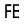

 Fit Curve
Component Index > ASTools > Curve > FCur
Fit a curve to another
Inputs
| Name | ID | Description | Type |
|---|---|---|---|
| Ref | R | Curve as reference | Curve |
| Fit | F | Curve to apply the fitting operation | Curve |
| indexR | iR | 0 (Start) or 1 (End) | Integer |
| indexF | iF | 0 (Start) or 1 (End) | Integer |
| Continuity | c | 0- Position, 1-Tangency,2-Curvature | Integer |
| Factor Tan | fT | Factor of tangency movement | Number |
| Factor Cur | fC | Factor of curvature movement | Number |
Outputs
| Name | ID | Description | Type |
|---|---|---|---|
| Curve | C | Changed curve | Curve |
Copyright © 2016 Robert McNeel & Associates.